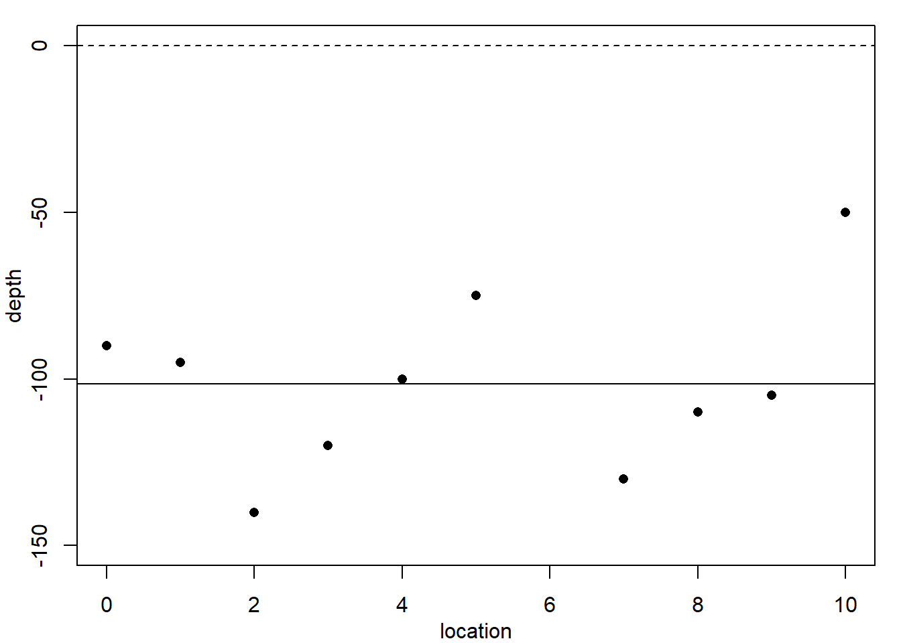
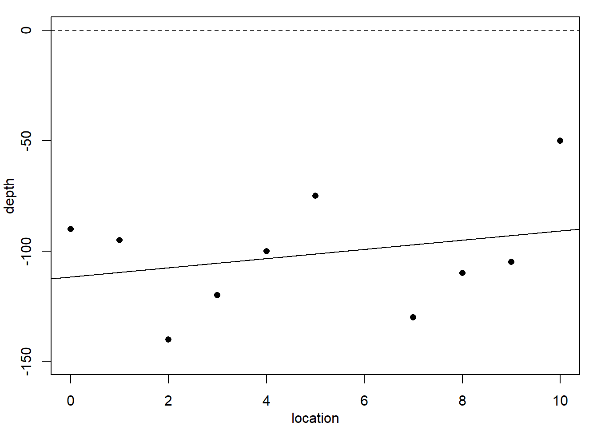
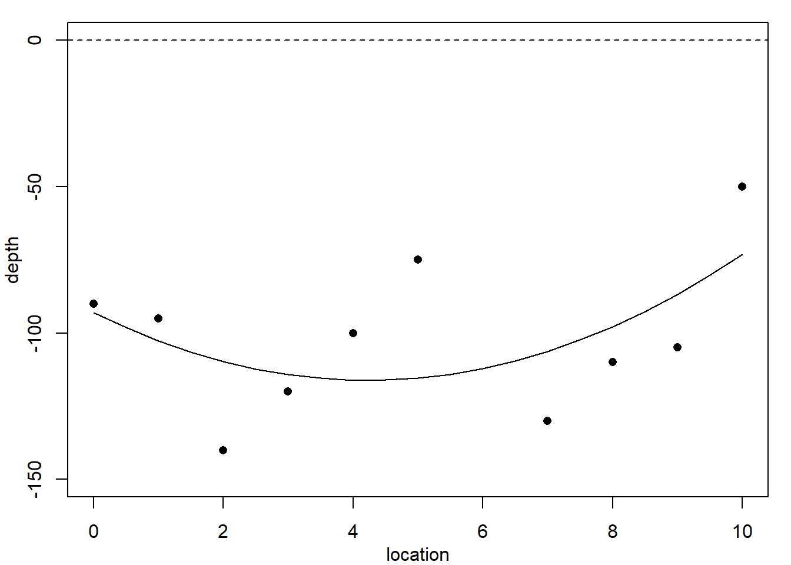
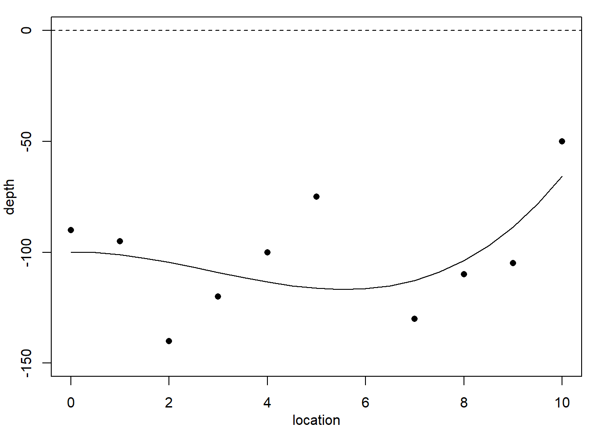
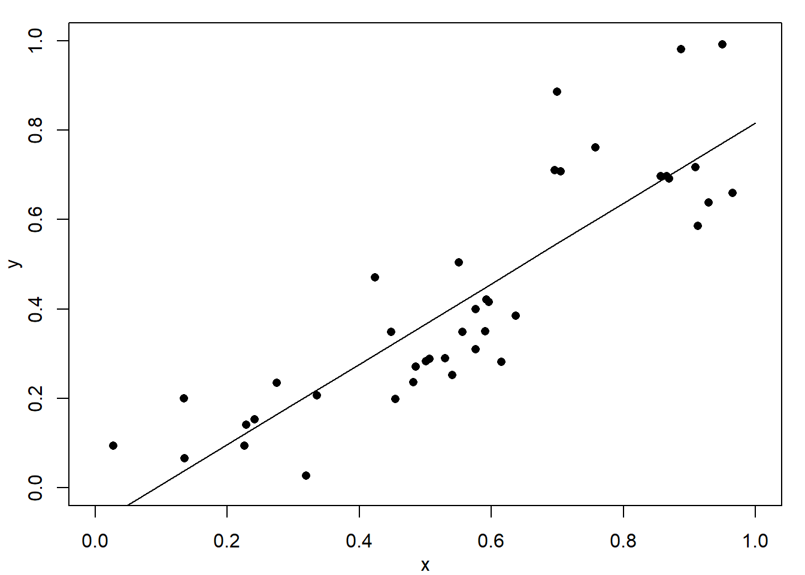
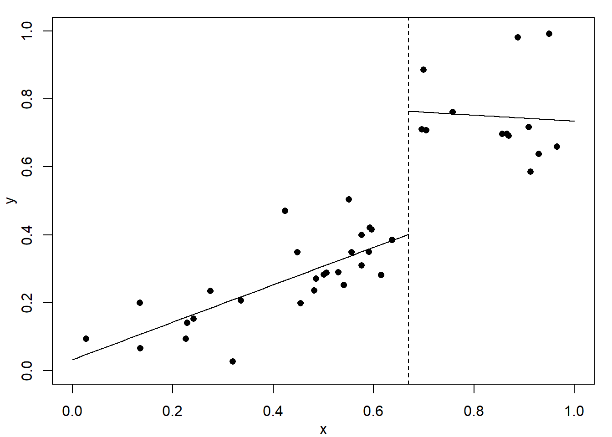
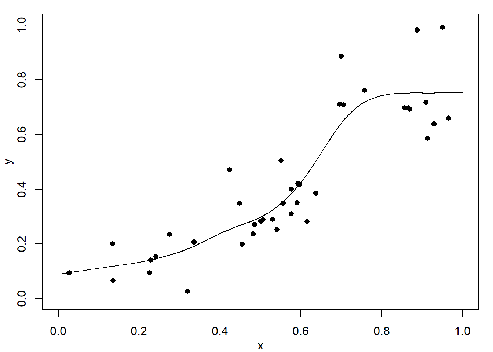
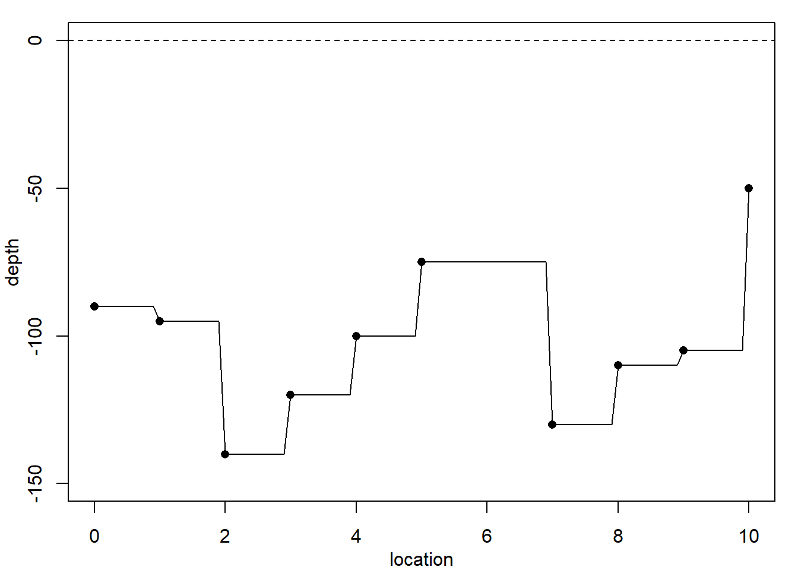
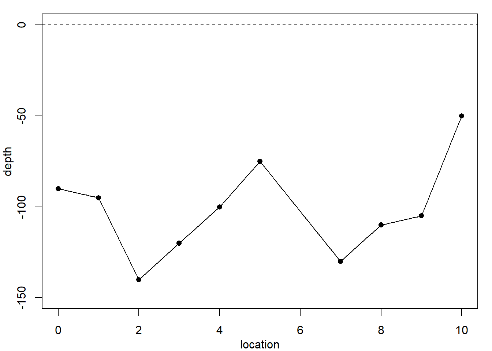
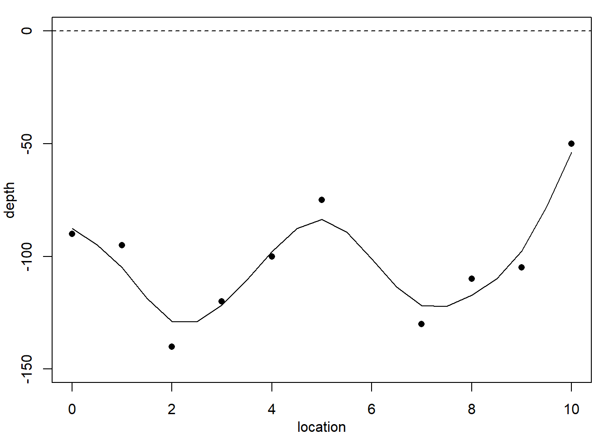

1 Introduction to Non-linear Modelling
\[ \def\b#1{\mathbf{#1}} \]
1.1 Overview
Table 1.1 reports on the depth of a coal seam determined by drilling bore holes at regular intervals along a line. The depth \(y\) at location \(t=6\) is missing: could we estimate it?
| Location, \(t\) | 0 | 1 | 2 | 3 | 4 | 5 | 6 | 7 | 8 | 9 | 10 |
| Depth, \(y\) | -90 | -95 | -140 | -120 | -100 | -75 | NA | -130 | -110 | -105 | -50 |
Figure Figure 1.1 plots these data, superimposed with predictions from several polynomial regression models.
Code
par(mar=c(3,3,1,1), mgp=c(2,1,0))
location=0:10
depth=c(-90,-95,-140,-120,-100,-75,NA,-130,-110,-105,-50)
plot(location, depth, ylim=c(-150,0), pch=16)
abline(h=0, lty=2)
fit0 = mean(depth, na.rm = T)
abline(h=fit0)
plot(location, depth, ylim=c(-150,0), pch=16)
abline(h=0, lty=2)
fit1 = lm(depth ~ location)
abline(fit1)
plot(location, depth, ylim=c(-150,0), pch=16)
abline(h=0, lty=2)
location.sq = location^2
fit2 = lm(depth ~ location + location.sq)
fitted2 = predict(fit2,
new=data.frame(location=seq(0,10,0.5),location.sq=seq(0,10,0.5)^2))
lines(seq(0,10,0.5), fitted2)
plot(location, depth, ylim=c(-150,0), pch=16)
abline(h=0, lty=2)
location.cubic = location^3
fit3 = lm(depth ~ location + location.sq + location.cubic)
fitted3 = predict(fit3,
new=data.frame(location=seq(0,10,0.5),
location.sq=seq(0,10,0.5)^2,
location.cubic=seq(0,10,0.5)^3))
lines(seq(0,10,0.5), fitted3)



Each of these models would predict a different value for the missing observation \(y_6\). We do not know the accuracy of the depth measurements, so in principle any of these curves could be correct. Clearly, the residual variance is largest for the constant-depth model in Figure 1.1 (a), and smallest for the cubic polynomial in Figure 1.1 (c). However, none of these models produces a convincingly good fit. Moreover, these models are not particularly believable, since we know that geological pressures exerted over very long periods of time cause the landscape and its underlying layers of rock to undulate and fracture. This suggests we need a different strategy.
Next, consider the simulated example in Figure 1.2. At first look we might be happy with the fitted curves in Figure 1.2 (a) or Figure 1.2 (b). The data, however, are created with a change-point at \(x=0.67\) where the relationship changes from linear with slope \(0.6\) to a constant value of \(0.75\). This description is completely lost with these two models.
Code
par(mar=c(3,3,1,1), mgp=c(2,1,0))
set.seed(12341)
x = runif(40)
y = 0.75*(x >= 0.67) + 0.6*x*(x<0.67) + rnorm(40,0,0.1)
plot(x,y, xlim=c(0,1), ylim=c(0,1), pch=16)
fit = lm(y ~ x)
fitted = predict(fit, new=data.frame(x=seq(0,1,0.1)))
lines(seq(0,1,0.1), fitted)
plot(x,y, xlim=c(0,1), ylim=c(0,1), pch=16)
x2 = x^2
fit = lm(y ~ x + x2)
fitted = predict(fit, new=data.frame(x=seq(0,1,0.1),x2=seq(0,1,0.1)^2))
lines(seq(0,1,0.1), fitted)
plot(x,y, xlim=c(0,1), ylim=c(0,1), pch=16)
fit = lm(y ~ x, weights = as.numeric(x<0.67))
fitted = predict(fit, new=data.frame(x=seq(0,0.67,0.01)))
lines(seq(0,0.67,0.01), fitted)
fit = lm(y ~ x, weights = as.numeric(x>=0.67))
fitted = predict(fit, new=data.frame(x=seq(0.67,1,0.01)))
lines(seq(0.67,1,0.01), fitted); abline(v=0.67,lty=2)
plot(x,y, xlim=c(0,1), ylim=c(0,1), pch=16)
fit4 = smooth.spline(x, y, df=6)
fit.locations = seq(0,1,0.01)
fitted4 = predict(fit4, fit.locations)
lines(fitted4)


Figure 1.2 (c) shows the result of fitting one linear function to the data below \(0.67\) and a second linear function above. Clearly, this fits well but it has assumed that the change-point location is known – which is unrealistic. Finally, Figure 1.2 (d) shows a fitted cubic smoothing spline to the data – we will studies these models later. This shows an excellent fit and leads to appropriate conclusions. That is, the relationship is approximately linear for small values, then there is a rapid increase, and finally a near constant value for high values. Of course, this is not exactly as the true relationship with a discontinuity at \(x=0.67\) but it would definitely suggest something extreme occurs between about \(0.6\) to \(0.7\). Full details will follow later, but the cubic spline fits local cubic polynomials which are constrained to create a continuous curve.
Now returning to the coal seam data. Figure 1.3 shows the data again, superimposed with predictions from methods which are not constrained to produce such smooth curves.
Code
par(mar=c(3,3,1,1), mgp=c(2,1,0))
location=0:10
depth=c(-90,-95,-140,-120,-100,-75,NA,-130,-110,-105,-50)
plot(location, depth, ylim=c(-150,0), pch=16); abline(h=0, lty=2)
fit1 = approxfun(location, depth, method="constant")
curve(fit1,0,10, add=T)
plot(location, depth, ylim=c(-150,0), pch=16); abline(h=0, lty=2)
fit2 = approxfun(location, depth, method="linear")
curve(fit2,0,10, add=T)
plot(location, depth, ylim=c(-150,0), pch=16); abline(h=0, lty=2)
fit3 = splinefun(location, depth)
curve(fit3,0,10, add=T)
plot(location, depth, ylim=c(-150,0), pch=16); abline(h=0, lty=2)
fit4 = smooth.spline(location[-7], depth[-7], df=7)
fit.locations = seq(0,10,0.5)
fitted4 = predict(fit4, fit.locations)
lines(fitted4)


The simplest method, constant-spline interpolation, assumes that the dependent variable remains constant between successive observations, with the result shown in Figure 1.3 (a). However, the discontinuities in this model make it quite unreliable. A better method, whose results are shown in Figure 1.3 (b), is linear-spline interpolation, which fits a straight line between successive observations. Even so, this method produces discontinuities in the gradient at each data point. A better method still, shown in Figure 1.3 (c), is cubic spline interpolation, which fits a cubic polynomial between successive data points such that both the gradient and the curvature at each data point is continuous.
A feature of all these interpolation methods is that they fit the data exactly. Is this a good thing? The final method assumes that there may be some measurement error in the observations, which justifies fitting a smoother cubic spline than the cubic interpolating spline, but as we see in Figure 1.3 (d) which does not reproduce the data points exactly. Is this a bad thing? We will see during this module how to construct and evaluate these curves. Here, the results are presented only for motivation.